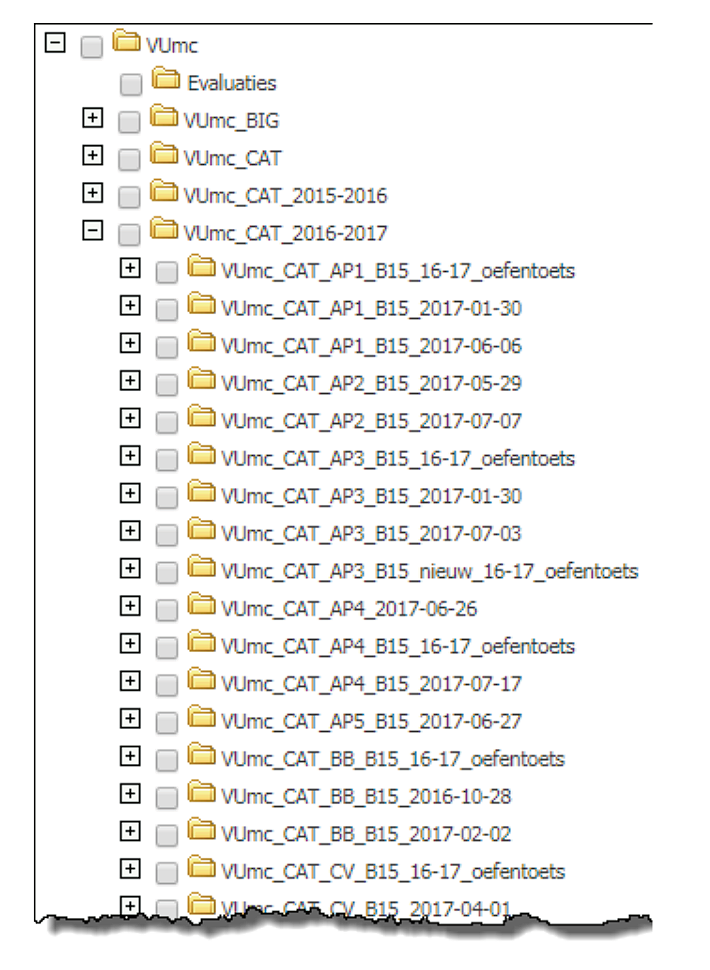

Part 3 Verdieping
3.1 Waarom (samenwerken aan) een itembank?
Tijdens de voorbereiding leg je het doel van de itembank vast. In dit hoofdstuk beschrijven we een aantal mogelijke manieren waarop een itembank impact kan hebben op het onderwijs. We gaan ook nader in op de voordelen van samenwerken aan een itembank. Ten slotte bekijken we welke factoren binnen het vakgebied bijdragen aan een succesvol gezamenlijk itembankproject.
3.1.1 Waarom een itembank?
Bepaal welke rol de itembank zal gaan spelen in het leer- en toetsproces. Vaak wordt een onderwijskundige impact nagestreefd met de inrichting van een itembank, zoals kwaliteitsverbetering of een verhoging van de efficiency.
Voorbeelden van beoogde impact zijn:
- Psychometrisch: het verhogen van betrouwbaarheid en validiteit van toetsen.
- Verantwoording en transparantie: door de komst van de itembank komen er meer mogelijkheden om de toetskwaliteit transparant te verantwoorden. Er is onder andere goed zicht op de totale itembank en de match met de toetsmatrijs.
- Borging: een beter controleerbaar en minder foutgevoelig productieproces van items, bijvoorbeeld door controleerbaar versiebeheer van items.
- Verduurzaming: items worden docent-onafhankelijk beheerd in de itembank. Ze verdwijnen dus ook niet als een docent vertrekt.
- Toetsveiligheid: het is simpel om meerdere toetsversies te produceren en zo spieken tegen te gaan.
- Toetsveiligheid: het wordt gemakkelijker om toetsen op een veilige manier te ontwikkelen, bijvoorbeeld doordat items niet meer via e-mail worden doorgestuurd.
- Efficiency: door hergebruik van items nemen de kosten af. Items hoeven maar eenmaal te worden ingetypt, redactie en verbetering gaan veel sneller en items kunnen gemakkelijker worden geselecteerd voor opname in een toets.
- Onderwijskwaliteit: door hergebruik van items kunnen docenten meer tijd aan onderwijs besteden.
- Onderwijskwaliteit: er ontstaan meer oefenmogelijkheden en mogelijkheden voor niveaudifferentiatie.
- Onderwijskwaliteit: er kunnen snellere herkansings- en betere feedback- mogelijkheden worden gerealiseerd.
- Onderwijskwaliteit: het studiesucces wordt hoger, doordat studenten kunnen oefenen en de stof daardoor beter beheersen.
- Utiliteit: investeringen in al ontwikkelde items worden effectiever terugverdiend.
3.1.2 Waarom samenwerken aan een itembank?
Zowel binnen de instellingen als tussen instellingen valt veel profijt te behalen uit samenwerking. Het gezamenlijk opzetten en gebruiken van itembanken kan zelfs op korte termijn leiden tot een aanzienlijke kwalitatieve en kwantitatieve winst. Hoe komt dat?
Ten eerste moeten docenten die samen een itembank inrichten het gesprek aangaan in eenduidige bewoordingen. Ze bepalen samen hoe ze over itemontwikkeling spreken en welke minimale eisen ze stellen ten aanzien van kwaliteit. Dit is op zich al kwaliteitsverhogend.
Ten tweede ligt bij samenwerking de inzet van toetsdeskundigen voor de hand. Zij kunnen een bijdrage leveren aan de toetsinhoud, maar ook op het gebied van bijvoorbeeld toets- kundigheid, redactie, opmaak. Ook dit zal de kwaliteit van items verhogen. Zie § 3.7.2 over verschillende rollen bij itemontwikkeling.
Ten derde maak je bij samenwerking meer afspraken over het proces van itemontwikkeling. Dat betekent dat de itemontwikkelaars zich bewuster worden van de verschillende ontwikkelingsfasen, de verantwoordelijkheid en de borging van het proces. Als itemontwikkelaars zich aan deze afspraken houden, leidt dat tot kwaliteitsverhoging. Er is betere grip op kwaliteit doordat het proces is geborgd.
Tot slot kan samenwerking zorgen voor lagere kosten. In eerste instantie zal een samenwerking meer kosten met zich meebrengen, maar als eenmaal ontwikkelde items vaker en door meer docenten worden ingezet en dus door meer studenten worden gebruikt, wordt het gebruik van de items per saldo goedkoper. Voor een verdere toelichting zie Hoofdstuk 3.4.
3.1.3 Kansrijke vakgebieden voor een succesvolle samenwerking
Een gedeelde visie op het vakgebied kan eerder leiden tot een succesvolle itembank. Hoe meer mensen in een vakgebied het eens zijn over de indeling van de leerstof, hoe meer het voor de hand ligt om aan itembanken te werken. Vakgebieden met een gemeenschappelijke Body of Knowledge (BoK), zoals de lerarenopleidingen of het medisch domein, zijn hier voorbeelden van. Ook vakgebieden waarbij de meeste opleidingen inleidende cursussen verzorgen, zijn geschikt voor het inrichten van gezamenlijke itembanken. Denk bijvoorbeeld aan Inleiding Psychologie, Inleiding in de Sociologie, Inleiding Neurobiologie, en Inleiding programmeren.
Stabiele vakgebieden lenen zich goed voor gezamenlijke itembanken die je met weinig onderhoud kan inrichten. Klassieke vakgebieden zoals logica, wiskunde, statistiek, mechanica, boekhouden en basiskennis microbiologie lenen zich goed voor een dergelijke samenwerking. Eenmaal ontwikkelde vragen verouderen niet of niet snel. Bij vakgebieden die zich gestaag ontwikkelen door nieuwe inzichten is het onderhoud van de items belangrijk. Verouderde items moeten worden opgespoord, verwijderd of aangepast. Dat proces moet systematisch worden ingericht om de kwaliteit van de vragenbank te kunnen borgen. Eenmaal per jaar gaat bijvoorbeeld de stofkam door alle items. In een samenwerkingsverband zijn hierover afspraken nodig. Voorbeelden van vakgebieden waarvoor dit geldt, zijn het medisch vakgebied, verpleegkunde, toerisme en geschiedenis. Samenwerking om kosten te delen en kwaliteit te verhogen, is hier een interessante driver.
Vakgebieden die inhoudelijk voortdurend in ontwikkeling zijn (volatiele vakgebieden), vragen nog meer nadruk op de inrichting van het itembanksysteem en het borgings- proces. Denk aan vakken waarbij recente wetgeving altijd van belang is, zoals Rechten, waar steeds aanpassing aan protocollen plaatsvindt, zoals Verpleegkunde of waar thematisch wordt gewerkt. Er is continue aandacht nodig voor screening, aanpassing, verwijdering of aanvulling. Hiervoor moet een proces worden ingericht.
In vakgebieden waarin veel studenten worden onderwezen, zijn itembanken ook geschikter om gezamenlijk aan te werken, omdat de investeringskosten en onderhoudskosten per student dan veel lager zijn.
3.2 Technologie: Systemen
Tijdens de voorbereiding van het project doe je onderzoek naar het te gebruiken itembanksysteem. Bij een klein project is dit waarschijnlijk het centrale toetssysteem van de instelling. Zoek binnen de instelling de afdeling op die verantwoordelijk is voor het beheer en gebruik van ICTO-applicaties en specifiek de toetssystemen en bespreek je wensen en eisen ten aanzien van de itembank.
Primair moeten itembanksystemen het mogelijk maken om:
- items goed te kunnen invoeren, ordenen, zoeken en selecteren
- aan kwaliteitsborging van de items te werken.
Toetssystemen zijn er in vele soorten en maten en bieden een grote hoeveelheid functionaliteiten die tegemoetkomen aan deze eisen.
De kerncomponenten van een digitaal toetssysteem zijn de auteursomgeving, de itembank, de afspeelomgeving en de analysetool. In Hoofdstuk 3.5 gaan we dieper in op de achterliggende processen van deze componenten.
3.2.1 Veel gebruikte toetssystemen voor onderwijs
Deze paragraaf geeft een overzicht van de meest gebruikte toetssystemen voor het hoger onderwijs. De lijst is samengesteld door experts die betrokken zijn bij de ont- wikkeling van dit handboek. De markt van toetssysteem-leveranciers is dynamisch. Daarom is deze lijst niet compleet.
Veel gebruikte toetssystemen in Nederland:
Toetssystemen in Learning Management Systemen met beperkte itembankfunctionaliteit:
Itembanksystemen (Stand Alone programma’s) met directe itemexportfunctionaliteit:
Toetssystemen met vragen:
- SOWISO (Wiskunde)
- Grasple (Statistiek)
- Zeer Actieve Psychologie
- R/Exams (Statistiek)
- Drillster
- Quizlet
- ProProfs
- Itembanken van uitgeverijen, vaak behorende bij een specifiek studieboek of online leeromgeving (bijv. Pearson MyLab series, (McGraw Hill methoden, WebAssign e.d.)
3.2.2 Toetsitems uitwisselen tussen systemen
Niet iedere onderwijsinstelling in Nederland gebruikt dezelfde toetssoftware.
Hoe werk je dan samen aan itembanken? Vaak is het mogelijk om eenvoudige meerkeuzevragen te converteren van het ene naar het andere systeem. Instelling A maakt bijvoorbeeld de vragen en instellingen B en C converteren ze naar hun eigen toetssysteem. In het ideale geval werk je echter in dezelfde auteursomgeving, hanteer je een gezamenlijk itemontwikkelproces en vloeien alle gemaakte vragen en data over de gemaakte items terug naar één itembank.
3.2.2.1 QTI-standaard
In de afgelopen jaren is onder meer in SURF-verband onderzoek gedaan naar de interoperabiliteit en uitwisselbaarheid van vragen tussen verschillende systemen. In internationaal verband wordt voortdurend gewerkt aan de IMS QTI-standaard (Question and Test Interoperability) voor de uitwisseling tussen toetssystemen. Deze standaard zal niet op korte termijn alle uitwisselingsvraagstukken oplossen, omdat sommige systemen vraagtypen hebben, die andere niet hebben, zoals de meerdere punten in een afbeelding aanwijzen of ongelijke-matchvragen. Tegelijkertijd werkt QTI al wel in veel gevallen voor multiple-choice toetsen. In de praktijk zien we dan ook dat een complexere samenwerking van meerdere instellingen voor de meeste deelnemende partijen betekent dat ze moeten werken in een ander systeem dan hun eigen instellingssysteem.
Als je bij een samenwerking niet in één itembanksysteem kan werken, beperk dan het te gebruiken vraagtype tot de meerkeuzevraag. Deze vorm is zo eenvoudig dat uitwisseling via QTI of platte tekst meestal probleemloos verloopt. Ga ervan uit dat metadata en media (afbeeldingen, geluid) niet (goed) meekomen als je items ex- en importeert.
Voer in de voorbereiding een proef uit met het uitwisselen van items. Zo kun je bepalen of het overzetten goed gaat of dat er conversiegereedschappen moeten worden gemaakt. Probeer zo veel mogelijk in hetzelfde systeem te werken, ook vanuit verschillende instellingen.
3.2.2.2 LTI en SCORM standaard
In de toetswereld wordt vaak gewerkt met de standaarden IMS LTI (Learning Tools Interoperability standard) en SCORM (Sharable Content Object Reference Model). Dit zijn géén uitwisselstandaarden voor items. Deze standaarden worden gebruikt om toetssystemen te koppelen aan andere systemen, zoals digitale leeromgevingen (Leer-managementsystemen (LMS) zoals Blackboard of Canvas).
Daarbij worden met name docent- en studentgegevens tussen de systemen automatisch uitgewisseld, kunnen toetsen vanuit het LMS worden gestart en worden de scores op toetsen teruggevoerd naar de cijferlijstfuncties in het LMS. Voor de eindgebruikers ontstaat een meer eenduidige beleving van het LMS en ze hoeven niet extra in te loggen.
3.2.3 Veiligheid en schaalbaarheid van itembanken
Vooral summatieve items moeten in veilige omstandigheden worden ontwikkeld en opgeslagen in itembanken. Hoe hoger het belang van de toetsen, hoe meer aan- dacht er nodig is voor veiligheid.
Ook tijdens de afname van toetsen wil je verspreiding van items tegengaan, vooral bij gekalibreerde vragen en kleine itembanken. Bij computerafname is het belangrijk om een afgeschermde omgeving te hebben (secure browser), maar ook goed te controleren op telefoons, brillen, horloges en andere apparatuur die foto’s kunnen maken van het scherm of van papier. Professionele surveillanten blijven noodzakelijk.
Tegelijkerijd is tijdens de coronaperiode van 2020-2021 een enorme sprong gemaakt in toetsin via online proctoring. Met online proctoring wordt de student op afstand gemonitord door het verzamelen van beelden van de student via de webcam en van het scherm.
Meer informatie is te vinden in het SURF werkboek Veilig toetsen.
Schaalbaarheid hangt nauw samen met de gewenste omvang van de itembank. Houd rekening met het toevoegen van eventuele externe auteurs, de performance van de auteursomgeving, een mogelijke groei in het aantal vragen en toe te voegen onder- werpen en metadata.
3.3 Omvang van de itembank
Hoe bepaal je het aantal items van een itembank? Tijdens de voorbereiding denk je al na over de benodigde omvang, omdat dit richting geeft aan de hoeveelheid tijd en middelen die nodig zijn om de bank te realiseren. Soms worden indrukwekkend aantal items genoemd, maar in feite is de benodigde omvang afhankelijk van veel factoren.
In de eerste plaats moet je weten hoeveel items je in een toets wilt opnemen. Mag en kan je de items hergebruiken? Wil je de items in een summatieve of formatieve toets gebruiken? Dit kan verschil maken voor het benodigde aantal.
In de volgende paragrafen schetsen we scenario’s voor verschillende toetsen waarvoor je de items wilt gebruiken.
3.3.1 Summatieve toetsen met een gelijktijdig toetsmoment voor alle studenten
De meeste toetsen in het hoger onderwijs bestaan uit klassieke tentamens. Eén docent of team stelt een toets samen voor een groep kandidaten voor één cursus van één instelling. Alle studenten maken de toets op hetzelfde moment. Welke situatie treedt dan op?
| Toetsvragen vrijgegeven | Toetsvragen niet vrijgegeven |
|---|---|
| Stel dat de toetsvragen wel worden vrijgegeven na afloop van de toets, dat je drie verschillende varianten van de toets samenstelt en dat de toets uit vijftig items bestaat. Dan is een itembank nodig waarbij de omvang bij elke toetsafname moet groeien met 150 items. Na vijf jaar zitten er 750 items in de itembank. Instellingen leggen vaak vast in hun toetsbeleid wat wel en niet toegestaan is ten aanzien van het hergebruik van items. | Stel dat de toetsvragen niet worden vrijgegeven na afloop van de toets, dat je drie verschillende varianten van de toets samenstelt en dat de toets uit vijftig items bestaat. Dan is een itembank van 150 items afdoende. |
| Stel dat de toetsvragen wel worden vrijgegeven na afloop van de toets, dat er voor elke positie van een vraag in de toets random gekozen wordt voor een van de twee items voor die positie en dat de toets uit vijftig items bestaat. Dan is een itembank nodig waarbij de omvang bij elke toetsafname moet groeien met honderd items. Na vijf jaar heb je een itembank met 500 items (Draaijer and Klinkenberg 2015). | Stel dat de toetsvragen niet worden vrijgegeven na afloop van de toets, dat er voor elke positie van een vraag in de toets willekeurig gekozen wordt voor een van de twee items voor die positie en dat de toets uit vijftig items bestaat. Een itembank van honderd items is afdoende. |
3.3.2 Summatieve toetsen die op elk moment kunnen worden afgenomen
Er zijn ook toetsen die worden afgenomen op aanvraag van de student. Daarbij bestaat het gevaar dat studenten items gaan verzamelen en met elkaar gaan delen. Of dat studenten zich vaker voor de toets inschrijven in de hoop dezelfde items te beantwoorden waarop ze dan het correcte antwoord weten.
Over dergelijke toetsen zegt men soms dat het niet erg is dat de toetsvragen bekend zijn, als de bank maar groot genoeg is. Immers, als studenten kunnen oefenen met alle items, leren ze vanzelf de stof. Er zal echter ook een groep studenten proberen de correcte antwoorden letterlijk uit het hoofd te leren, waardoor er geen echte kennis of begrip wordt verworven. Als ze hierin slagen, maakt dit de toets minder valide. Hoeveel items er nodig zijn om dit tegen te gaan, is niet te zeggen. Itembanken van ten minste 1000 tot 2000 items lijken noodzakelijk.
Het is in alle gevallen aan te raden studenten nieuwe vragen te laten beantwoorden. Een minimale variant is dat alternatieven uit meerkeuzevragen variëren van inhoud of van positie. Daarnaast zou gebruik kunnen worden gemaakt van geparametriseerde items. Dit zijn vragen waarbij getallen, objecten, concepten of begrippen worden getrokken uit een verzameling (Fattoh 2014).
Bij de start van het itembankproject van de Open Universiteit gold de richtlijn dat er vijftien keer zoveel items in de bank moesten zitten als het aantal items in een toets. Deze eis was afgeleid van drie tentamenmogelijkheden per jaar en de aanname dat studenten binnen vijf jaar de opleiding zouden afronden.
Voor docenten was het bijna onhaalbaar om zoveel items te maken, hoewel het voor ongeveer vijftig itembanken is gelukt. De OU heeft de programmatuur laten aanpassen, zodat studenten pas na vijf keer weer eenzelfde item voorgelegd konden krijgen. Daarmee kon de eis van vijftien keer verlaagd worden naar zes keer; een opluchting voor docenten.
Een andere eis was dat de itembank na een jaar psychometrisch nuttige analyses kon opleveren. Elk item moest dan ten minste dertig keer beantwoord zijn. Voor sommige banken was echter de eis van vijftien keer al veel te hoog, bijvoorbeeld wanneer er maar tien studenten op jaarbasis het tentamen aflegden in een afstudeerrichting.
3.3.3 Formatieve diagnostische toetsen
Formatieve diagnostische toetsen die het klassieke tentamen representeren, komen overeen met het eenmalig maken van één tot drie representatieve toetsen. Het maakt niet uit of de toetsvragen uitlekken. Het is immers de verantwoordelijkheid van de student zelf om al dan niet serieus een diagnostische toets te maken.
Is de insteek dat studenten heel vaak een diagnostische toets kunnen afnemen? Dan lijkt de verstandigste keus om te bepalen hoeveel van dergelijke toetsen je wilt aanbieden. Indien er twee beschikbaar zijn, bekijken studenten doorgaans de eerste in het begin van de onderwijsperiode om het gewenste eindniveau in te schatten en de tweede net voor het summatieve tentamen om voor zichzelf te toetsen of ze voldoende beheersing hebben. Het aantal items die nodig is voor summatieve toetsen die op elk moment kunnen worden afgenomen is hier niet nodig.
3.3.4 Formatieve oefentoetsen
Formatieve oefentoetsen vragen minder items per onderwerp. De student heeft vooral goede instructieve items nodig over belangrijke, moeilijke onderwerpen. Per onderwerp zijn wellicht een stuk of twintig items voldoende. Als een vakgebied uit twintig onderwerpen bestaat, zijn er ongeveer 400 items nodig.
3.4 Kosten en baten
Tijdens de voorbereiding schat je de financiële haalbaarheid van je project in. Je maakt een globale inschatting van de te verwachten investeringskosten en exploitatiekosten van de itembank. Daarnaast kijk je naar de kwantitatieve en kwalitatieve voordelen of baten die de itembank mogelijk oplevert. Je probeert antwoord te vinden op de vragen ‘waarom investeren in een itembank?’ en ‘wegen de kosten op tegen de baten?’ Het uitwerken van een kosten-batenanalyse biedt hiervoor uitkomst. Bij grote investeringsplannen wordt steeds vaker een businesscase gevraagd. Een businesscase geeft antwoord op de vraag ‘waarom willen we dit eigenlijk?’ Het is een onderbouwing van toekomstig besluit en draagt eraan bij dat iedereen begrijpt waarom het project belangrijk is.
Het ontwikkelen van itembanken kan onderdeel zijn van een groter implementatie- traject van digitaal toetsen bij instellingen. Hier ligt vaak een businesscase aan ten grondslag. De kosten en baten van een te ontwikkelen itembank is dan een van de onderdelen. 9 Voor meer informatie over de businesscase zie de thema-uitgave Digitale toets- en itembanken in het onderwijs, jan 2017 (hoofdstuk Kosten en baten van een itembank, bladzijde 12).
3.4.1 Kosten
Voor de ontwikkeling van een itembank is een investering nodig. Dit zijn de project- kosten. Aansluitend heb je geld nodig voor exploitatie voor het doorontwikkelen en het beheer.
3.4.1.1 Projectkosten
De initiële investering bestaat uit het creëren van een samenwerkingsverband, het ontwikkelen van een plan, het opzetten van de organisatie, het overleggen en onder- handelen over de inrichting van de bank en werkwijzen, het licenseren en opzetten van het beheer van een itembanksysteem, het ontwikkelen van een eerste aantal items voor de itembank en het afnemen van de eerste toetsen met de items uit de itembank.
Voor het ontwikkelen van items worden verschillende tijdsbegrotingen aangehouden. Voor eenvoudige kennisvragen in meerkeuzevorm, zeker als het bovendien gemakkelijk is om afleiders te formuleren, kunnen er soms vier items per uur ontwikkeld worden. Vragen met casuïstiek of toepassing kosten doorgaans meer tijd, tot wel gemiddeld 60 minuten per vraag. Deze tijd kan nog oplopen als een item ook audiovisueel materiaal en feedback krijgt.
Indien vragen meermaals gebruikt gaan worden, is het verstandig om de kwaliteit te bekijken na de eerste afname. De ervaring leert dat na de eerste afname soms wel de helft van de items nog aangepast moet worden. Dit kan gaan om een tekstuele aanpassing of een inhoudelijke. Bij de voortgangstoets geneeskunde zijn er behoorlijk wat mensen vooraf betrokken bij de ontwikkeling van een item. Ondanks deze zorgvuldigheid blijkt zo’n één procent van de items achteraf inhoudelijk niet te voldoen.
Neem voor kosten de uren van de projectleden op en vermenigvuldig die met hun uurtarief. Neem kosten van externen op, net als kosten van middelen (zoals systeem, ruimtes, reiskosten, opleidingen, materialen). Neem ook een post onvoorzien op, die je kunt onderbouwen met mogelijke risico’s.
Een aantal mogelijkheden om de ontwikkeling van complexere itembanken te financieren:
- Bij de ontwikkeling van de itembanken wordt ‘met gesloten beurzen’ gewerkt. Er worden afspraken gemaakt wie hoeveel items maakt en reviewt en in welke termijnen. Onderling worden dus geen rekeningen verstuurd.
- Itemontwikkelaars krijgen een vergoeding per geconstrueerd en goedgekeurd item. Dan maakt het niet zoveel uit welke docent of instelling de meeste items maakt. In dit geval zal er wel out-of-pocket-geld beschikbaar moeten zijn om item- ontwikkelaars te bekostigen.
- De coördinerende instelling of docent krijgt een aparte vergoeding, omdat de coördinator relatief meer tijd kwijt is en een grotere verantwoordelijkheid heeft.
3.4.1.2 Exploitatie
Na afloop van het project moet de itembank worden onderhouden en door- ontwikkeld. Tijdens het project maak je een plan hoe dat eruit ziet. In dit zogenoemde exploitatieplan leg je onder andere vast dat medewerkers tijd krijgen om items te blijven ontwikkelen, de itembank in de lucht te houden en te beheren. Ga ervan uit dat eens in de zoveel jaar alle items worden nagelopen, bijvoorbeeld om ze te hercoderen vanwege curriculumwijzigingen, nieuwe boeken et cetera.
Bedenk dat zonder een gezamenlijke itembank de kosten voor het ontwikkelen van items veelal niet transparant zijn. Het kost tijd en geld om elke keer op individuele basis items te maken, die mogelijk van variërende kwaliteit zijn.
3.4.2 Baten
Wat zijn de baten van de itembank? In § 3.1.1 staat een opsomming van mogelijke vormen van impact van de itembank. Probeer die kwaliteitsdoelen zo te formuleren dat ze in financiële zin kunnen worden uitgedrukt. Vaak is dat niet goed mogelijk en komt het aan op de kracht van argumenten.
Baten kunnen bestaan uit structurele exploitatie, waarbij financiering wordt geborgd door bijvoorbeeld lump-sum financiering, contributie of financiering op basis van toetsafname door studenten of docenten. Breng vooraf in kaart welke wijze van bekostiging je wilt hanteren. Zorg ervoor dat partijen zich al in de voorbereiding hieraan committeren.
Baten kunnen ook bestaan uit lagere kosten en toegenomen kwaliteit. Eenmaal ontwikkelde items worden immers gebruikt door meerdere docenten en vooral door meerdere studenten. Dat betekent dat er weliswaar kosten zijn gemoeid met het ontwikkelen van een itembank, maar dat per saldo de verhouding tussen kosten en kwaliteit per afgenomen toets per student beter is.
3.5 Organisatie: processtappen, rollen en rechten
In het ontwerp van de itembank organiseer je de ontwikkeling en het beheer. Je bepaalt wie welke taken uitvoert en hoe dat gebeurt. Inzicht in de globale processtap- pen die bij een itembank horen, kan helpen om deze taken op een rijtje te krijgen.
3.5.1 Componenten en processtappen
Itembanksystemen bestaan vaak uit verschillende componenten met bijbehorende functies. Kerncomponenten zijn meestal een auteursomgeving, een itembank, een afspeelomgeving en een analysegereedschap. Binnen elk van die kerncomponenten zijn processtappen te onderscheiden. Neem de functionaliteiten van de itembank. Hierin onderscheiden we processen om items te kunnen invoeren, controleren, wijzigen, voorzien van metadata, ordenen en selecteren.
Hieronder staat een uitwerking van een aantal processtappen die binnen de verschillende componenten van een toetssysteem kunnen plaatsvinden.
- Auteursomgeving
- Auteur schrijft item
- Review door collega reviewer
- Redactie door toetsexpert
- Specialist metadateert item
- Gatekeeper geeft items vrij
- Afname omgeving
- Toetsbureau zet toets klaar
- Analysetool
- Docent analyseert toets met toetsexpert
3.5.2 Rollen en rechten
Wie mag bij welke informatie in de itembank? Wie mag wat veranderen of toevoegen? Dat bepaal je door het toekennen van rollen en rechten. In de meeste itembanksystemen liggen de mogelijke rollen en rechten vast. Je kunt er zelf personen aan koppelen. Sommige systemen maken het mogelijk om zelf rollen te definiëren. Bepaal bij voorkeur eerst welke rollen en rechten je wilt kunnen onderscheiden, voordat je een keuze maakt voor een systeem.
Voorbeelden van mogelijke rollen:
Beheer
- Super user: mag bij alle items en kan rechten instellen voor alle gebruikers.
- Coördinator: heeft toegang tot een deel van de itembank en een deel van de gebruikers en kan hier wijzigingen in aan brengen.
Itemontwikkeling
- Auteur: mag items toevoegen en bewerken.
- Controleur: mag items wijzigen en van commentaar voorzien.
- Psychometrisch specialist: mag metadata toevoegen en bewerken en commentaar geven op items.
- Redacteur: zorgt voor controle op taal- en spelfouten, uniform taalgebruik en uniforme opmaak van items.
- Illustrator/multimediaspecialist: zorgt voor uniforme en goed bruikbare afbeeldingen en voegt deze in de items.
- Copyright controleur: zorgt dat gebruik van afbeeldingen en teksten juridisch gelegitimeerd is.
- Gatekeeper: zorgt voor een finale check van een item.
- Lid examencommissie of lid visitatiecommissie: kan kijken in de itembank om vast te stellen dat een eventueel itembankbeleid in een opleidingsplan wordt uitgevoerd.
- Externe validator: inspecteert de itembank als iemand van buiten het ontwikkelteam.
Voorbeelden van verschillende rechten in een itembanksysteem:
- Toegang tot alle items.
- Toegang tot delen van de itembank.
- Leesrechten, bewerkrechten, verwijderrechten, verplaatsrechten, toevoegrechten, commentaarrechten, metadateringsrechten.
- Rechten om toetsen samen te stellen.
- Rechten om toetsen klaar te zetten voor afname.
- Rechten om toetsanalyses uit te voeren.
Tip
Wees spaarzaam met het toekennen van verschillende rollen en rechten. Hoe complexer het aantal rollen en rechten en de workflow, des te meer tijd en energie het redactieteam kwijt is aan de inrichting en het beheer hiervan. Een gebrek aan goed beheer zal de gebruiksvriendelijkheid verminderen en het proces van itemontwikkeling stagneren.
3.5.3 Geautomatiseerde workflow
De huidige toetssystemen bieden in meer of mindere mate werkprocesondersteuning voor samenwerking aan items. Dit betreft het proces dat een item ondergaat van start tot gereed product en verwijdering. De inrichting van het werkproces voor itemontwikkeling ligt dus al grotendeels vast.
Let er bij de keuze voor een systeem op dat meerdere personen tegelijkertijd kunnen werken in het systeem en gelijktijdig aan dezelfde items kunnen werken. In webgebaseerde toetssystemen is dit meestal standaard mogelijk.
Via een systeem van rollen en rechten kunnen items sequentieel aan verschillende personen ter beschikking worden gesteld voor revisie, controle of accordering. Dit is de geautomatiseerde workflow. In een workflow kan worden vastgelegd dat een item pas naar een volgende fase kan als een voorgaande fase, bijvoorbeeld grammaticale controle, is doorlopen.
In een toetssysteem kan van elk item een geschiedenis worden bijgehouden. Zo wordt inzichtelijk wie wanneer aan welk item heeft gewerkt. Als er fouten zijn ontstaan tijdens het proces, kan zo nodig een roll-back worden uitgevoerd.
Tip
Als de kwaliteit bij inzet al hoog is: richt een uitgebreider workflowproces in met diverse controlemomenten. Daarmee optimaliseer je de mogelijkheden om de kwaliteit van de items te verhogen. In § 3.7.2.2 lees je meer over gecontroleerde itemontwikkeling.
3.6 De ordening van een itembank
Een goede ordening van een itembank geeft inzicht in de opbouw ervan en in de mate waarin deze geschikt is om toetsen mee samen te stellen. Ook helpt een goede ordening bij het efficiënt beheren van items. Tegelijkertijd wijst de praktijk uit dat ordening nooit een geheel sluitend systeem kan opleveren. Voor één specifieke toets is het wel mogelijk om een sluitend systeem te creëren. Gebruik je één itembank om items voor toetsen voor meerdere vakgebieden te selecteren, dan is het een vrijwel onmogelijke opgave.
Wat is de ordening van een itembank? Het vastleggen van wat iedereen bedoelt met de term is van groot belang om spraakverwarring te voorkomen. Maak goed onder- scheid tussen de structuur van een itembank en metadata. In dit hoofdstuk bespreken we deze begrippen en indelingsprincipes.
3.6.1 Metadata
Metadata zijn toegevoegde stukjes informatie aan items. Metadata van items zijn bijvoorbeeld het hoofdonderwerp van de vraag, een subonderwerp van de vraag, de status van het item (concept, ter revisie, ter redactiecontrole, goedgekeurd, afgekeurd), de moeilijkheidsgraad of het discriminerend vermogen, de soort vraag, de taxonomische aanduiding (bijvoorbeeld kennis, toepassing, inzicht), de functie van de vraag, wie het item heeft gemaakt of bewerkt en in welke toetsen het item wordt gebruikt.

Figure 3.1: Een item met enkele metadatavelden ingevuld.
3.6.2 Structuur
De structuur van een itembank is de opdeling van de itembank in onafhankelijke, vaak hiërarchisch geordende eenheden. Dit is vergelijkbaar met een mappenstructuur zoals je die vindt in de verkenner van een computer.
Over het algemeen hebben gebruikers behoefte aan deze duidelijke hiërarchische structuur. Om inzicht te krijgen in de opbouw van een itembank, is deze structuur beter bruikbaar dan een structuur alleen gebaseerd op metadata. In de praktijk werkt het het beste om eerst de hiërarchische structuur te kiezen en dan op vraagniveau metadata toe te voegen.
De structuur en metadata zijn vaak op verschillende wijzen technisch met elkaar verweven per itembanksysteem. Gebruikers kunnen de structuur en de metadata apart gebruiken voor indeling en selectie van items, maar soms ook in combinatie. Dit maakt het doordenken van structuur en metadata extra moeilijk.
Enkele voorbeelden van bestaande itembankstructuren:
Het VUmc heeft een aparte itembank binnen het itembanksysteem van Questionmark Perception.
|

Figure 3.2: De hoofdstructuur van het VUmc volgt de afzonderlijke cursusafhankelijke toetsen (CAT) die worden afgenomen in het curriculum. |

Figure 3.3: De hoofdstructuur voor een itembank over statistiek van de Faculteit der Sociale Wetenschappen van de VU. Deze itembank bevindt zich in een cursus in Blackboard. De itembank volgt de onderwerpindeling binnen statistiek met verbijzondering naar Advanced/Basic en Moeilijkheidsgraad. |
DeKennistoetsenbank bevat itembanken voor gebruikers van Pedagogisch Werk (PW), Maatschap- pelijke Zorg (MZ) en Verpleegkundige en Verzorgende opleidingen MBO Zorg en Welzijn.

Figure 3.4: Deze itembanken zijn ingedeeld naar: vraagtypen, de structuur van de Body of Knowledge (BoK), het Kwalificatie Dossier (KD) en bijzondere kenmerken. In de afbeelding is de inrichting van de itembank van Pedagogisch Werk (PW) weergegeven. |

Figure 3.5: Een docent van de cursus Inleiding Microbiologie heeft een itembank in QuestionmarkLive gemaakt. De indeling volgt exact de hoofdstukindeling van het studieboek dat hij gebruikt. |
Indeling vragenbank LUMC. In het itembanksysteem RemindoToets heeft het Leids Universitair Medisch Centrum (LUMC) een itembank.

Figure 3.6: In eerste instantie koos het LUMC voor een themagerichte indeling op basis van disciplines uit de landelijke Voortgangstoets. Deze structuur leidde tot problemen vanwege de gebrekkige vind- baarheid van items voor docenten en het beheer van de vragen door docenten. |

Figure 3.7: Inmiddels is voor een meer pragmatische ordening naar opleidingen en onderwijs- onderdelen gekozen. |
Structuur van de itembank van Toets & Leer.

Figure 3.8: Iedere itembank binnen het itembanksysteem RemindoToets van Toets & Leer is uit drie niveaus (categorieën) opgebouwd: Onderwerp > Leerdoel > Toetsterm. Hierdoor klap je slechts drie niveaus uit om een toetsvraag te zoeken, namelijk onderwerp, leerdoel en toetsterm. Het is de kunst geweest om de lijst met onderwerpen niet te algemeen, maar ook niet te gedetailleerd te maken.
3.6.3 Structuur en metadata gebruiken
Hoe moet je de structuur en metadata van een specifieke itembank inrichten? In de eerste plaats helpt de inrichting het doel van de toetsen – die worden samengesteld op basis van de items – zo efficiënt mogelijk te realiseren. Hiervoor is met name de toetsmatrijs leidend. Is die niet aanwezig, neem dan als uitgangspunt een sequentie van items waarmee studenten kunnen oefenen. De structuur en de metadata helpen om de items te selecteren, vindbaar te maken en ‘in te laden’ in een toets. Ze maken het mogelijk om het grote aantal items zodanig te ordenen dat de gebruiker er goed mee kan werken en er bijvoorbeeld een toets met de gewenste eigenschappen mee kan samenstellen.
Tip
Voor metadata geldt het adagium: garbage in = garbage out.
Als er te weinig tijd of geld is om metadata consequent en precies bij te houden, dan wordt de bruikbaarheid van de metadata teniet gedaan. Houd liever minder metadata bij en zorg dat ze van goede kwaliteit zijn.
Een basisprincipe voor de inrichting van de structuur en de hoeveelheid metadata is het streven naar spaarzaamheid. Houd een complexiteit aan die net genoeg is om het doel te bereiken dat de toetsen dienen en de basisstappen voor kwaliteitscontrole te borgen.
Ten tweede ondersteunt de inrichting van de metadata het proces van item- ontwikkeling en kwaliteitsborging. De metadata in de vorm van de processtappen voor ontwikkeling zijn dus van belang. Zie ook § 3.5.1. Hetzelfde geldt voor metadata waarmee je eventueel verouderde items kunt traceren of items afkomstig van een bepaalde auteur kunt selecteren.
Op de derde plaats moet je de metadata zo inrichten dat ze de basis kunnen vormen voor zinvolle rapportages en feedback voor studenten. Is het doel van een specifieke toets dat studenten feedback krijgen over hoe zij per cel van een toetsmatrijs scoren? Schep hiervoor dan de mogelijkheid in de metadatastructuur. Is dit doel niet vooraf bepaald? Laat een dergelijke indeling achterwege.
Tip
Als in je vakgebied sprake is van een breed gedragen Body of Knowledge (BoK, kennisbasis) of (inter)nationale standaarden, zoals bijvoorbeeld CanMeds of bij de Interuniversitaire Voortgangstoets Geneeskunde (iVGT), dan ligt het voor de hand om deze indeling als hoofdstructuur te kiezen. Zeker als die structuur ook al hiërarchisch is geordend. Het gebruik ervan kan nog effectiever zijn als de structuur van het curriculum van een opleiding er ook nauw bij aansluit.
Als het curriculum (vakindeling) er niet nauw bij aansluit, wat helaas vaak het geval is, levert het kiezen van de BoK als hoofdstructuur in de praktijk problemen op. Vaak is het dan efficiënter om als hoofdstructuur de curriculumindeling (vakken) te volgen en daar BoK-gegevens als metadata aan te koppelen.
Figure 3.9: Een itembank met als hoofdstructuur een indeling van hoofdstukken. Vragen kunnen worden gefilterd op basis van verschillende categorieën van metadata.
Tot slot, accepteer dat er verschillende itembanken met verschillende ordeningen en metadatastructuren binnen een enkel itembanksysteem worden gehanteerd. Binnen hogeronderwijsinstellingen leeft vaak de wens om één uniforme ordening en metadatastuctuur te realiseren voor alle items. De praktijk laat zien dat dit niet kan. Dat is niet zo vreemd: itembanken worden in het hoger onderwijs gebruikt voor verschillende doeleinden en vakgebieden en vereisen dus een andere ordening en metadatastructuur. Probeer wel om het aantal varianten te beperken.
Tip
Het ‘op papier’ verzinnen van een benodigde structuur om een bepaald toetsdoel te realiseren, is heel moeilijk. Het beste kun je deze structuur bedenken door een pilot uit te voeren. Ontwikkel een matrijs en een toets met behulp van het itembanksysteem. Itereer daarna naar een optimale oplossing voor de gegeven context en het doel. Zorg ervoor dat de gebruikers van het systeem zich bewust zijn van de voor- en nadelen van de gekozen indeling, zodat er voldoende draag- vlak is. Hier zit een ‘politiek’ aspect aan, omdat deelgebieden in een vakgebied graag hun deelgebied in de juiste ‘zwaarte’ vertegenwoordigd zien in een toets.
Zeker als je toetsresultaten over een langere termijn met elkaar wilt vergelijken (zoals bijvoorbeeld bij de voortgangstoetsen in het medisch domein), is het belangrijk om de toetsmatrijs niet te vaak te veranderen.
Tip
Vaak willen docenten bij een item kunnen aangeven met welke andere items in de itembank het betreffende item niet gelijktijdig in een toets mag voorkomen. Het aantal mogelijkheden dat hiervoor wordt nagelopen, neemt snel toe als de itembank groeit. Dit vergt een voortdurende handmatige handeling. Het is eenvoudiger om te onderzoeken of de toetsen zo kunnen worden samengesteld en gefinetuned dat, na de eerste selectie van items, eventueel van elkaar afhankelijke items handmatig kunnen worden verwijderd.
Tip
Het is verstandig om elk item in een itembank van een unieke code te voorzien, die zelf de hiërarchische of metadatastructuur in zich herbergt. Items worden namelijk soms per ongeluk verplaatst. Na een toetsafname waarbij alleen ruwe data overblijft, maken de codes het terugvinden van individuele items in de bank weer mogelijk. Het unieke technische ID van een item op systeemniveau zegt vaak niet veel.
Een voorbeeld van zo’n code:
B2_AF12-3_RegcoefT is dan een item uit het Bachelor2-jaar over Hoofdstuk 12 uit het studieboek van Agresti en Finlay, met als onderwerp de regressiecoëfficiënt.
Dit vergt wel uiterst precies werken door degene die items invoeren en controle- ren. Het onderstreept het belang van vindbaarheid en het gebruik van te veel of te weinig tags.
3.6.4 Feedback en vraagtypes
Afhankelijk van het doel van je itembank maak je een keuze over het type items en de aard van de feedback van de items.
3.6.4.1 Feedback
Voor formatieve toetsen is het ontwikkelen van feedback per item heel belangrijk. Feedback kan de student belangrijke studeeraanwijzingen geven. Het is verstandig om vroeg in het project na te gaan welke soort feedback je wilt ontwikkelen. Zo kun je een goede inschatting maken van de benodigde ontwikkeltijd per vraag.
Vooral bij oefentoetsen is het belangrijk dat er bij iedere vraag inhoudelijke feed- back wordt gegeven. Feedback moet voldoende specifiek en gedetailleerd zijn en zo mogelijk studeeraanwijzingen voor de student bevatten of een verwijzing naar studiemateriaal om de stof opnieuw te bestuderen. Je kunt niet vooraf bedenken waarom studenten correcte dan wel incorrecte antwoorden kiezen. Noem die dan ook niet. Formuleer feedback zorgvuldig en bij voorkeur neutraal. Het mag studenten niet demotiveren, maar uitnodigen om verder te studeren.
3.6.4.2 Vraagtypes
In een itembank kun je items maken op basis van verschillende vraagtypes. De meeste toets- en itembanksystemen ondersteunen meer dan tien types. Zie bijvoorbeeld dit overzicht van alle QTI-gedefinieerde vraagtypes. Zie ook § 3.2.2.1.
Voor oefentoetsen is het gebruik van verschillende vraagtypes aan te raden. Dit maakt de toetsen aantrekkelijker. Met deze vraagtypes kun je bijvoorbeeld meerdere deelonderwerpen tegelijkertijd bevragen of gebruikmaken van de voordelen van computerafname, zoals het verslepen of aanklikken van objecten. Dat elke vraag kan resulteren in een andere score, maakt weinig uit voor oefentoetsen.
Voor summatieve en diagnostische toetsen is vanuit statistisch oogpunt het gebruik van verschillende vraagtypes af te raden. Kies voor meerkeuzevragen én geef deze items allemaal een gelijk gewicht (bijv. 1 scorepunt). Deze keuze zorgt ervoor dat er geen problemen optreden met verschillende scoremogelijkheden of met de wijze van beantwoording. Dit zorgt voor meer flexibiliteit in het willekeurig kunnen trekken van items uit een itembank. Variëren in het aantal alternatieven (1-uit-3-, 1-uit-4- of 1-uit-5-vragen) levert over het algemeen geen problemen op. De scores vindt immers plaats op basis van 1 punt voor het juiste antwoord en 0 voor een afleider.
Bij meerkeuzevragen wordt de een-uit-vijfvraag veel door Amerikanen gebruikt. De een-uit-viervraag en een-uit-drievraag worden in Nederland veel toegepast. De raadkans verandert bij deze varianten, maar soms is het lastig om afleiders te bedenken. Een-uit-viervragen zijn geschikt voor vakgebieden waar bepaalde antwoorden echt fout zijn. Denk hierbij aan exacte vakken zoals wiskunde, maar ook biologie. In vakgebieden waar verbanden belangrijk zijn of waar dingen niet snel fout zijn, is de een-uit-drievraag te verkiezen. Voorbeelden zijn communicatie en de meeste vakken van psychologie. Ga terughoudend om met items waarbij een casus wordt beschreven met daarbij deelvragen. Een dergelijk vraagtype maakt het moeilijker om flexibel items te trekken, omdat het aantal deelvragen kan verschillen per casus. Dat heeft invloed op de maximaal te behalen score.
3.7 Didactiek: kwaliteit van items
Het verhogen van de kwaliteit van toetsing is meestal één van de belangrijkste redenen om gezamenlijk aan itembanken te werken. Zie § 3.1.2. De kwaliteit van toetsing neemt toe als de kwaliteit van de items toeneemt. Maar hoe zorgt een tool als een gezamenlijke itembank voor een hogere itemkwaliteit? Daarover gaat dit hoofdstuk.
Er zijn veel definities voor de kwaliteit van toetsing (Joosten-ten Brinke and Draaijer 2014). De kwaliteit van een itembanksysteem betreft de mate waarin het systeem het mogelijk maakt om op een effectieve, efficiënte en prettige manier items te ontwikkelen, te beheren en te selecteren voor opname in een toets. De kwaliteit van de itembank neemt toe naar mate de items beter de leerdoelen uit de toetsmatrijs representeren. De kwaliteit neemt ook toe als er meer items in de itembank zitten die van hogere kwaliteit zijn.
3.7.1 Kwaliteit van items
Wil je de kwaliteit van items verbeteren, focus je dan op twee soorten basiskwaliteit van toetsing: validiteit en betrouwbaarheid. Met behulp van itembanken kun je in beide een verbeterslag maken. Dit geldt zowel voor formatieve toetsing als voor summatieve toetsing.
De validiteit van een toets gaat over de mate waarin een toets meet wat je beoogt te meten. Voor validiteit is het belangrijk dat de items relevant zijn voor een bepaald thema of leerdoel. Kwaliteitsverhoging treedt op wanneer docenten vaardiger worden in het maken van dit soort items. Training en samenwerking helpt daarbij. Itembank- systemen ondersteunen dit proces onder andere door mogelijkheden te bieden om direct commentaar te leveren, het faciliteren van samenwerking en de opzet van een verbetercyclus via een workflow. Zie § 3.5.1 en 3.5.2.
De betrouwbaarheid gaat over de mate waarin het toetsresultaat (de score op een toets) reproduceerbaar is en zo min mogelijk afhangt van het toeval. Voor een hoge betrouwbaarheid moet de ‘ruis’ of ‘meetfout’ zo klein mogelijk zijn. De betrouwbaarheid van toetsen kan op de eerste plaats groter worden door meer items op te nemen in toetsen. Door gezamenlijk aan itembanken te werken vergroot je de voorraad aan items. Het aantal items waarmee een docent toetsen kan samenstellen, neemt toe.
De betrouwbaarheid wordt ook groter door items te construeren die beter discrimineren tussen de studenten die voldoende en onvoldoende beheersing hebben van de studiestof. Beter discriminerende items verhogen over het algemeen ook de validiteit: je meet beter wat je wilt meten. Formuleer items in de eerste plaats zo helder, efficiënt en objectief mogelijk om beter te discrimineren.
Er zijn veel handboeken en lijstjes met vuistregels om de meest bekende oorzaken voor onduidelijke items te voorkomen en daarmee de ruis. Zie bijvoorbeeld Van Berkel, Bax, and Joosten-ten Brinke (2017) Toetsen in het Hoger Onderwijs.
3.7.2 Hoe realiseer je een kwaliteitsverbetering?
Je verhoogt de kwaliteit van items door fluctuatie in kwaliteit van items te verminderen en de vraagkwaliteit op een hoger niveau te krijgen. Dit inzicht komt voort uit het vakgebied van de operations management, zoals geïllustreerd in figuur 3.10. In het linker plaatje zie je dat de kwaliteit van een product of dienst gemiddeld vrij laag is, dan weer eens hoog en dan weer eens laag, maar niet stijgend. Het rechter- plaatje laat zien dat de kwaliteit gestaag toeneemt en de fluctuatie kleiner wordt. Om een dergelijke kwaliteitsverbetering te realiseren, is een doelgerichte benadering nodig.

Figure 3.10: Grafische weergave van kwaliteitsontwikkeling. Links: de kwaliteit varieert heel erg, de gemiddelde kwaliteit is relatief laag. Rechts: de kwaliteit wordt constanter en de kwaliteit neemt systematisch toe.
Er zijn twee manieren om de kwaliteit van nieuwe items te verhogen: ofwel door een grotere vaardigheid te ontwikkelen in het construeren van items, ofwel door review tijdens het constructieproces. Itembanksystemen bieden hiervoor workflow-onder- steuning. Zo werk je systematisch aan kwaliteitsverhoging.
Om de kwaliteit van bestaande items in de itembank te verbeteren, kun je verder analyses uitvoeren na afname van toetsen en aanpassingen doorvoeren op basis van interpretaties van die analyses. Dit is in feite een cyclisch proces, dat onderdeel uit- maakt van het onderhoud en beheer van een itembank. We werken dit in de volgende paragrafen uit.
3.7.2.1 Voorlichting en training
Om goede items te kunnen construeren zijn voorlichting, training en een goede feedbackloop in itemontwikkeling onontbeerlijk. Geef bij de start van een itembank training aan de beoogde itemontwikkelaars. Dit helpt om een gezamenlijk gevoel van kwaliteit te ontwikkelen en te laten groeien. Betrek toetsexperts bij de opzet van de training. Wanneer de itemontwikkeling eenmaal op gang is, kunnen meerdere trainingen volgen, bijvoorbeeld tijdens redactievergaderingen van het auteursteam. Zie ook § 3.7.2.3. Het diepgaand bespreken van items op basis van toets- en item- analyses is in feite impliciete training. Training is daarmee een continu terugkerend onderdeel van het onderhoud en beheer van de itembank.
3.7.2.2 Gecontroleerde itemontwikkeling door review
Door een stapsgewijze itemontwikkeling met ingebouwde reviewmomenten kun je veelvoorkomende valkuilen of onduidelijkheden voortijdig signaleren en oplossen. Het welbekende vierogenprincipe is hiervoor bedoeld. Review vindt plaats door het inschakelen van vakgenoten of experts.
Voor twee samenwerkende docenten hoef je het reviewproces en de verdeling van rollen niet uitgebreid te definiëren, zeker niet in technische zin. Tegenwoordig wordt wel geëist dat elk item in ieder geval éénmaal door een collega-docent is bekeken. Ook moet duidelijk zijn wie een item goedkeurt. Onderschat dit niet: de consequenties van een toets die door één docent is ontwikkeld zijn even groot als die van een landelijke toets. Een student die de toets niet heeft gehaald, kan niet afstuderen.
Itembanken voor toetsen waarmee grote belangen gemoeid zijn vereisen meer rollen en rechten. Stel dat op basis van de itembank toetsen worden ontwikkeld voor een selectie of toetsen zonder herkansingsmogelijkheid. De stakeholders, zoals de politiek, het publiek, bestuurders en studentenbonden, stellen hoge eisen aan transparantie en de kwaliteit van toetsing. Denk bijvoorbeeld aan landelijke toetsen, zoals de PABO-rekentoets, de toets in het kader van 10voordeleraar of de centrale toetsing in het mbo. Er is een uitgebreid, transparant reviewproces nodig. Voor een beschrijving van mogelijke rollen in dit proces, zie § 3.5.1. Hoe omvangrijker het team van betrokkenen, des te belangrijker is de aansturing van teams en project- ondersteuning door een coördinator.
3.7.2.3 Itembankonderhoud en beheer
Onderdeel van het onderhoud en beheer van de itembank is het bespreken van items die niet zo goed functioneren. Uit psychometrische analyse van deze items blijkt dat ze lage rit-waarden of hoge of lage proportiewaarden hebben. Voor een uitgebreide uitleg van deze termen, zie § 3.7.3.2. Probeer er gezamenlijk achter te komen wat de oorzaak is en wat je kunt doen om de items te verbeteren. Regelmatig zul je besluiten om items te verwijderen en geheel opnieuw te construeren. Deze besprekingen zijn wellicht aanleiding om de regels en richtlijnen voor items met het team aan te scherpen. Soms blijkt dat het probleem niet in de items, maar in het onderwijs zit. In dat geval zul je moeten bekijken hoe onderwijs en items beter op elkaar kunnen aansluiten.
Het komt voor dat er een herbeoordeling van items nodig is of een aanpassing van de ordeningen. Er zijn bijvoorbeeld nieuwe inzichten in het vakgebied, wijzigingen in onderwerpen of leerdoelen of in de metadata en de toetsmatrijs. Je kunt je dan afvragen of er nieuwe sets van items voor nieuwe onderwerpen nodig zijn. Moeten items worden gehercodeerd? Zet gerichte ontwikkelopdrachten uit voor de itemontwikkelaars.
Redactieteam
Het team van itemontwikkelaars komt gedurende het ontwikkelproces regelmatig bij elkaar om de voortgang van de itemontwikkeling in de gaten te houden. Maak één persoon verantwoordelijk voor het itemontwikkelproces. Noem deze persoon de coördinator of hoofdredacteur. Kom met elkaar overeen dat deze persoon het mandaat heeft om mensen aan te spreken op de afspraken over het ontwikkelen van items.
De hoofdredacteur plant regelmatig een overleg in met alle betrokkenen. Werk in deze overleggen aan het onderling vertrouwen en het bespreken van problemen rondom het proces van de itemontwikkeling.
3.7.3 Toetsgegevens
Een krachtig middel om de itemkwaliteit te verbeteren, is het verzamelen van gegevens over items van afgenomen toetsen. In combinatie met de kwaliteitsverhoging door itembanken heb je een dubbele verbeterslag te pakken. Deze gegevens zeggen namelijk iets over de kwaliteit van de items en de mate waarin studenten presteren of over de kwaliteit van het onderwijs. Het is belangrijk om beschrijvende en psychometrische gegevens goed te onderscheiden. Zij hebben een heel verschillend karakter, dat moet passen bij het doel dat je nastreeft met de itembank.
3.7.3.1 Beschrijvende data
Eenvoudige beschrijvende data van items gaan om zaken zoals het aantal keren dat een item is afgenomen of beantwoord.
Op het niveau van een toets als geheel kunnen beschrijvende data gaan over hoe vaak een student een poging heeft ondernomen om een toets te maken, wanneer de poging is geweest, hoe de student scoort, wat de slagingspercentages zijn enzovoort. Deze data zijn afkomstig uit toetsservicesystemen.
De data kun je vertalen naar een grafische overzichtspagina voor docenten of studenten. Docenten krijgen een overzicht van de progressie van een groep studenten en de onderwerpen waarmee ze moeite hebben. Studenten krijgen inzicht in hun progressie en hun positie ten opzichte van groepsgenoten. Dit levert in feite managementinformatie op. Gebruik van data op deze wijze noemt men ook wel learning analytics.
3.7.3.2 Psychometrische data
Psychometrische gegevens zeggen iets over de moeilijkheidsgraad van items en in welke mate ze onderscheid maken of een student de stof wel of niet beheerst. Daarbij maakt het uit of je gebruikmaakt van de klassieke testtheorie (KTT) of de item-response-theorie (IRT). In deze paragraaf leggen we beide theorieën kort uit.
3.7.3.2.1 De klassieke testtheorie (KTT)
De klassieke testtheorie gaat ervan uit dat de score op een toets bestaat uit de werkelijke score en een fout in de meting (ruis). Door statistische bewerkingen kan van één toets worden bepaald wat de betrouwbaarheid is van de toets, dat wil zeggen, in welke bandbreedte de werkelijke score van de student met een bepaalde mate van zekerheid ligt.
De belangrijkste psychometrische gegevens voor items binnen het concept van de klassieke testtheorie zijn:
- Betrouwbaarheid: de mate waarin de toets als geheel, dus alle items gezamenlijk, goed onderscheid maken in de mate van beheersingsgraad van de stof. Het is een maat van meetnauwkeurigheid en de mate waarin de score op een toets niet aan het toeval is te wijten. Volgens de literatuur moeten tentamens ten minste een waarde van 0,7 of hoger hebben en bijvoorbeeld selectietoetsen een waarde van 0,9 of hoger.
- p-waarde: de proportie correcte antwoorden van de studentenpopulatie. De p-waarde wordt vaak aangeduid als de moeilijkheidsgraad van een item, maar is in feite een graad van gemakkelijkheid. Bij open items wordt een optimum van 0,5 en voor meerkeuzevragen met vier alternatieven is dit 0,67. Hier kan ook nog de a-waarde worden genoemd. Dat is de proportie studenten uit de groep die een bepaalde afleider heeft gekozen.
- Rit-waarde: de correlatie tussen de score van de studenten op de item en de score op de toets als geheel. De rit-waarde is een maat voor het discriminerend vermogen van een vraag. Dat is de mate waarin het item onderscheid maakt tussen de studenten die de stof beter of slechter beheersen. De rir-waarde is een wat strengere maat voor het discriminerend vermogen, omdat de invloed van het item zelf op het discriminerend vermogen wordt weggelaten. Volgens de literatuur ligt het streven op een rit-waarde van ten minste 0,3. Waarden lager dan 0,1 worden als slecht beschouwd. Negatieve waarden verdienen direct aandacht. Hier komt de rat-waarde van pas. Dat is de mate waarin de keuze voor een bepaald incorrect alternatief samenhangt met de toetsscore.
Het kan waardevol zijn om psychometrische gegevens bij de items op te slaan. Sommige toetssystemen ondersteunen zelfs een automatische update van deze gegevens na iedere beantwoording door een student. Op zich aantrekkelijk, ware het niet dat ze alleen interpreteerbaar zijn per toetsafname. Onderling kun je ze alleen vergelijken als de afnamecondities identiek zijn. Psychometrische gegevens per toetsafname zijn wel zinnig.
3.7.3.2.2 De item-response-theorie (IRT)
Wil je weten wat de meer absolute moeilijkheidsgraad en het discriminerend vermogen van items zijn, dan biedt de item-response-theorie (IRT) uitkomst. IRT levert zogenaamde gekalibreerde items op. Om die te verkrijgen, worden de items afgenomen bij een grote steekproef onder een groep studenten met veel spreiding in kennis en vaardigheid. In het kalibratieproces wordt heel precies gemeten hoe items onderscheid maken tussen studenten op specifieke niveaus van moeilijkheid. Itembanken met items die op deze manier zijn ontwikkeld kun je gebruiken in zogenaamde adaptieve toetssystemen. De achterliggende technieken zijn zo complex dat ze alleen met ruime ontwikkelbudgetten kunnen worden gemaakt. Voorbeelden hiervan zijn de PABO-rekentoets (Wiscat), de Rekentuin (primair onderwijs) en de in ontwikkeling zijnde computer-adaptieve versie van de iVTG (interuniversitaire voortgangstoets geneeskunde). Ook geldt dat de items aan strengere eisen moeten voldoen dan bij klassieke toetsen, vooral voor wat betreft discriminerend vermogen (Linden, Linden, and Glas 2000).
Soms kiezen docenten in de voorbereiding voor adaptief toetsen, zonder zich voldoende te realiseren dat hiervoor complexe en kostbare IRT-technieken nodig zijn. Kies hier alleen voor als de projectgelden toereikend zijn.
Voor de ordening van de itembank heeft de keuze voor IRT niet zo heel veel consequenties. Het maken van een adaptieve itembank vergt meer kennis en middelen om de kalibratie uit te kunnen voeren, maar het resultaat kan worden opgenomen in een ‘gewone’ itembank. Er zijn voldoende items nodig, verspreid over de verschillende moeilijkheidsniveaus, met meer moeilijke items dan items met een gemiddelde moeilijkheidsgraad.
Voor een wat uitgebreidere handzame uitleg van de klassieke testtheorie en item-respons theorie, zie De Gruijter, D. N. M. (2008). Toetsing en toetsanalyse.
3.8 Juridische aandachtspunten
Als je als instelling een itembank wilt ontwikkelen, hetzij alleen, hetzij samen met andere instellingen, krijg je te maken met een aantal juridische aandachtspunten. Hoe borg je het eigendom van de items en de itembank? Wat moet je regelen op het gebied van bescherming van persoonsgegevens? En met betrekking tot samenwerkingsvormen? Hoe ga je het verspreiden van items tegen? In dit hoofdstuk komen deze zaken aan de orde.
Weet je niet zeker hoe het bij jouw instelling in elkaar steekt? Vraag het na bij de afdeling juridische zaken of het juridisch bureau van je instelling.
Werk je aan een instellingsoverstijgende itembank? In de praktijk is het een behoorlijke klus dit juridisch goed doortimmerd te krijgen. Betrek een jurist met kennis van zaken. Neem de tijd om te zoeken naar iemand met deze expertise.
3.8.1 Eigendom items en itembank
Maak afspraken over de rechten over de items. Hiermee borg je dat deze beschikbaar blijft voor de instelling en/of het samenwerkingsverband. Items zijn beschermd door het auteursrecht. Dit recht ontstaat bij het maken van het werk. Volgens de Auteurswet heeft de auteur het exclusieve recht om te publiceren en te dupliceren.
Let op de volgende zaken:
- Voor iedere docent met een arbeidsovereenkomst geldt dat de auteursrechten toekomen aan de werkgever indien het materiaal is gemaakt bij de uitoefening van de onderwijstaken, tenzij partijen anders zijn overeengekomen.
- Indien er sprake is van een samenwerkingsverband: maak de items eigendom van het samenwerkingsverband. Specificeer dit in de samenwerkingsovereenkomst òf stel de items onder Creative Commons Licentie beschikbaar. Let op: indien de items summatief worden ingezet, is dit laatste wellicht niet wenselijk, want dan wil je juist niet dat iedereen de items kan gebruiken.
- Regel bij een samenwerking dat bij vertrek van één van de partners het eigenaarschap van de items bij het samenwerkingsverband blijft. Leg dit vast in de samenwerkingsovereenkomst.
- Als je gebruikmaakt van afbeeldingen bij items, heb je te maken met beeldbankenrecht. Het is verboden beeldmateriaal te kopiëren en te gebruiken. Dit moet de instelling of het samenwerkingsverband afkopen per beeld of er een abonnement voor afsluiten. Tip: definieer een extra stap binnen je itemontwikkelproces, waarin de reviewer van een item checkt of het gebruikte beeld en geluid is toegestaan.
- Bepaal of er databankenrecht ontstaat. De Databankenwet beschermt tegen overnemen of herhaaldelijk opvragen van gegevens uit een databank zonder toestemming van de producent. De gegevens die in de databank staan zijn als ‘verzameling’ beschermd door het databankenrecht. Als je als partij een investering doet in de databank bij het aanleggen ontstaat er automatisch databankenrecht. Degene die investeert, mag ook exploiteren.
- Spreek met de betrokken commerciële marktpartij af hoe je content kunt terugkrijgen bij een exit-scenario. Wat voor tool levert de marktpartij?
- Laat je goed adviseren als je een commerciële partij betrekt, zodat jouw belangen zijn afgedekt. Voorkom dat een andere partij ervandoor gaat met de waardevolle inhoud van de itembank.
3.8.2 Misbruik van itembankmateriaal
Instellingen willen meestal voorkomen dat de items ‘op straat’ terecht komen, vooral als het summatieve items betreft. Vaak komen toetsen en items terecht op https://www.studeersnel.nl, https://www.stuvia.nl en https://www.knoowy.nl. Spreek de website aan op het auteursrecht. Zij zijn geen eigenaar van de items en mogen ze dus niet publiceren. Als je ze vraagt om de items te verwijderen, moeten zij hieraan gehoor geven.
3.8.3 Het gebruik van materiaal van andere partijen in itembanken
Je kan niet zomaar allerlei video’s en afbeeldingen van anderen overnemen in items. Hieraan zijn wettelijke regels verbonden. Wel zijn er veel mogelijkheden om recht- matig bestaand materiaal te gebruiken en anders is er de mogelijkheid om sommige afbeeldingen of video’s speciaal voor je itembank opnieuw of na te maken. Neem hiervoor budget op in je project.
Ga na of je instelling, of de instelling waarmee je wilt samenwerken, een regeling heeft getroffen met Stichting Pro (Publicatie en Reproductie Organisatie). Dit orgaan monitort auteursrechten binnen het onderwijs en beschermt de bij haar aangesloten uitgeverijen. Pro controleert instellingen op het gebruik en hergebruik van publicaties van commerciële partijen. Instellingen kunnen ervoor kiezen om Stichting Pro jaarlijks een afkoopbedrag te betalen. Daardoor hoeven deze instellingen geen administratie bij te houden voor korte stukken tekst die worden overgenomen.
Als je instelling géén afkoopbedrag betaalt, moet je expliciet rekening houden met auteursrecht. Soms moet je voor een overgenomen bron betalen, maar vaak ook niet. Hieronder sommen we de belangrijkste vuistregels op voor het gebruik van beeld en geluid in items. Deze informatie is ontleend aan https://www.auteursrechten.nl.
3.8.3.1 Linken mag altijd
Je mag linken naar afbeeldingen, beeld- en geluidsfragmenten op het internet. Openbaarmaking op het internet moet echter wel rechtmatig zijn. Een beeld- of geluidsfragment stream je rechtstreeks. Downloaden en vertonen is verboden, tenzij de licentie dit toestaat.
Voor summatief toetsen kan streamen problematisch zijn. Bij toetsing wordt vaak gebruikgemaakt van materiaal dat juist niet openbaar toegankelijk mag zijn. Bovendien wil je niet dat het materiaal nèt van het internet is verdwenen op het moment van de toets.
3.8.3.2 Licentie voor hergebruik
Afbeeldingen en audiovisuele werken met een licentie die hergebruik toestaat, bijvoorbeeld een Creative Commons-licentie, kun je zonder problemen downloaden en vertonen. Afhankelijk van de gebruikte CC-licentie zijn de mogelijkheden ruimer of beperkter. Check daarom altijd even de betekenis van de licentie op https://creativecommons.nl/uitleg/.
3.8.3.3 Het citaatrecht biedt veel mogelijkheden
Het citaatrecht maakt het mogelijk om afbeeldingen of audiovisuele werken te gebruiken. Je moet aan de volgende voorwaarden voldoen:
- De citaten dienen ter ondersteuning van de inhoud van het onderwijs. Je mag ze niet gebruiken ter versiering. Ook mag je geen wijzigingen aanbrengen in het te citeren fragment.
- De omvang van het citaat is gerelateerd aan het doel dat je ermee nastreeft. In de praktijk komt dit neer op: gebruik altijd korte fragmenten.
- Afbeeldingen mag je wel in hun geheel ‘citeren.’
- Je doet aan bronvermelding.
3.8.3.4 Afbeelding of audiovisueel werk uit de eigen bibliotheek]
Mogelijk heeft je instelling gebruikslicenties afgesloten, bijvoorbeeld voor Academia, die gebruik van afbeeldingen en audiovisuele werken binnen het onderwijs van je instelling toestaan, zonder dat je voor ieder gebruik aparte toestemming moet vragen en een vergoeding betalen. Ga na binnen je instelling of er dergelijke licenties zijn.
3.8.3.5 Complete audio(visuele) werken
Je mag een compleet audiovisueel werk gratis afspelen of vertonen zonder toestemming, mits:
- het afspelen een educatief doel tijdens een les of werkgroep dient en deel uitmaakt van het onderwijsprogramma.
- het afspelen fysiek in de onderwijsinstelling plaatsvindt.
- het afspelen plaatsvindt in het kader van onderwijs zonder winstoogmerk.
- Een kopie van het werk in een toetsapplicatie zetten, zodat studenten het thuis kunnen afspelen, mag niet. Je moet hiervoor toestemming vragen aan de maker.
3.8.3.6 Delen van audio(visuele) werken
Je mag delen van audiovisuele werken plaatsen in een toets, mits:
- de vertoning/het afspelen uitsluitend dient ter toelichting bij niet-commercieel onderwijs. Het is dus aanvullend en niet onderwijsvervangend.
- de plaatsing gebeurt in een besloten omgeving, waartoe alleen studenten toegang hebben. Loggen studenten in voor de toets? Dan voldoe je aan deze voorwaarde.
- er een billijke vergoeding wordt betaald aan de rechthebbenden. Neem hiervoor contact met ze op.
De vertoning hoeft niet fysiek in het leslokaal plaats te vinden. Studenten mogen de werken thuis zien of afspelen.
3.8.3.7 Bronvermelding
Als je gebruikmaakt van materiaal van derden waarvoor je moet betalen, neem je contact op met de rechthebbenden. Ook als je materiaal namaakt. Het contact verloopt via de volgende organisaties:
Meer informatie:
3.8.4 Bescherming persoonsgegevens
Vanwege de Algemene Verordening Gegevensbescherming (AVG) heb je verwerkersovereenkomsten nodig om de privacy van docenten, medewerkers en studenten te borgen.
Zodra medewerkers of studenten een account aanmaken voor bijvoorbeeld een toetsapplicatie en de instelling of leverancier toegang heeft tot deze persoons- gegevens, moet er een verwerkersovereenkomst worden getekend tussen de instelling en de leverancier.
Let op de volgende zaken:
- Het gebruik van een SAAS (software-as-a-service)-dienst vraagt om extra handelingen. De instelling of het samenwerkingsverband moet zorgen voor een vewerkersovereenkomst met de leverancier. Bij het inloggen in de applicatie staat er dan vaak: ‘er zijn gebruiksvoorwaarden van toepassing.’ De gebruikers kunnen dit wel of niet accepteren, waarmee de privacy is geborgd. De instelling of het samenwerkingsverband neemt zelf voldoende passende maatregelen. Er is afstemming met de leverancier nodig in een contract en medewerkers moeten weten waar ze aan toe zijn. Als het gaat om een applicatie op de eigen servers, dan is de instelling of het samenwerkingsverband zelf verantwoordelijk voor het systeem en de gegevens. Zorg ook in dat geval voor duidelijke communicatie met medewerkers.
- Lees meer over de Algemene Verordening Gegevensbescherming op de SURF thema-pagina Algemene Verordening Gegevensbescherming (AVG).
3.8.5 Rechtsvormen voor samenwerkingsverbanden
Ben je van plan om met meerdere instellingen een itembank te ontwikkelen? Leg de rechtsvorm en de onderlinge verhoudingen vast. Stem ook af wie wat op welk moment aanlevert. Dit leg je bijvoorbeeld vast in statuten en of een samenwerkingsovereenkomst.